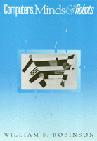

A philosophical discussion of Artificial Intelligence
A philosophical discussion of Artificial Intelligence


 A philosophical discussion of Artificial Intelligence
A philosophical discussion of Artificial Intelligence

|  |
Computers, Minds, and RobotsWilliam S. Robinsonpaper EAN: 978-1-56639-082-8 (ISBN: 1-56639-082-6) |
"In this clearly written and well organized work, Robinson aims to show that people are not wholly physical."
—Choice
William S. Robinson offers a clear, lively discussion of the philosophical problems that surround the developing science of Artificial Intelligence (AI). He introduces and clarifies the basic concepts necessary for understanding these problems and discusses opposing views and possible solutions. Robinson describes the kinds of further research that seem likely to improve our understanding of the mechanisms of intelligence. He also explains the new "connectionist" approach to AI and relates it to the more traditional approach.
This book is not a typical monograph on the latest developments in computer or robot technologies. Instead, Robinson poses philosophical questions about the nature of AI. For example, if we had a machine that could perform intelligent tasks (e.g., do arithmetic, solve a chess problem, write a poem), what would that show about whether the machine could think or feel? What does our knowledge of mathematics imply about our own thinking processes? Does the fact that we can do certain things imply anything about how we do them? Likewise, if a machine can do certain things, does that ability imply anything about its own level of intelligence?
Robinson uses the Turing test set-up and Serle's Chinese Room to introduce questions of current interest about artificial intelligence. Imaginary robots help clarify relationships between different mental processes. He examines an argument that some believe shows the impossibility of a robot that is a person's double, and he explains two major approaches that others think might someday make such a robot doppelg�nger conceivable.
"Robinson's negative argumentation against traditional and recent attacks on epiphenomenalism is great fun. Robinson writes very clearly and puts his position down plainly; even those who are sure that he is wrong will benefit from sharpening their wit against him.... Robinson has interesting things to say."
—Canadian Philosophical Review
"Computers, Minds, and Robots is clearly written, carefully organized, well argued, and it covers the right topics."
—Alex Orenstein, Professor of Philosophy, Queens College, C.U.N.Y.
Preface
1. The Turing Test
Questions About the Turing Test •
The Significance of the Turing Test •
The Block Machine •
Producers and Conduits
2. Searle�s Chinese Room
The Chinese Room Argument •
Some Objections and Replies •
Some Limitations of Searle�s Argument •
Caveat
3. Paralytics and Robots
Bodily Connections •
Sensations and Feelings •
Pointlessness •
Overview
4. Dennett, Robots, and Pains
A Point of Strategy •
Is �Pain� Coherent? •
Pain Behavior •
Looking Inside •
Morphine •
Conclusions
5. A License for Artificial Intelligence?
Turing Machines •
Church�s Thesis •
Psychological Theories •
Questions and Conclusions
6. Lucas and Self-Models
Formal Systems •
Formal Systems and Robots •
G�del�s Result •
Lucas�s Argument •
Can a Machine Assert Its Own G�del Sentence? •
Am I Consistent?
7. Working on Sentences
Refining the Task of AI •
The Core of the Solution •
Extending the Core •
Open and Closed Tasks •
Why Sentence Processing?
8. Doubts About Sentential AI
Dreyfusian Doubts •
The Knowledge Access Problem •
Some Brain Facts •
Significance of These Facts •
A Complication
9. Parallel Distributed Processing
Being Connected •
Getting Connected •
Hidden Units •
Attractive Properties of PDP Networks •
Conundrum: Does PDP Exist?
10. New Doubts and New Prospects
Some Difficulties for PDP •
Mere Implementation •
Hybrid Views •
Action-Directed Views •
Conclusions
11. The Ill-Connected Robot
Robot Rlt •
Dividing Outputs •
Action Kernels •
What Is the Significance of the Ill-Connected Robot? •
Concluding Remarks
Notes
Index of Robots
Index
William S. Robinson is Professor of Philosophy at Iowa State University and the author of Brains and People (Temple).
© 2015 Temple University. All Rights Reserved. This page: http://www.temple.edu/tempress/titles/906_reg.html.